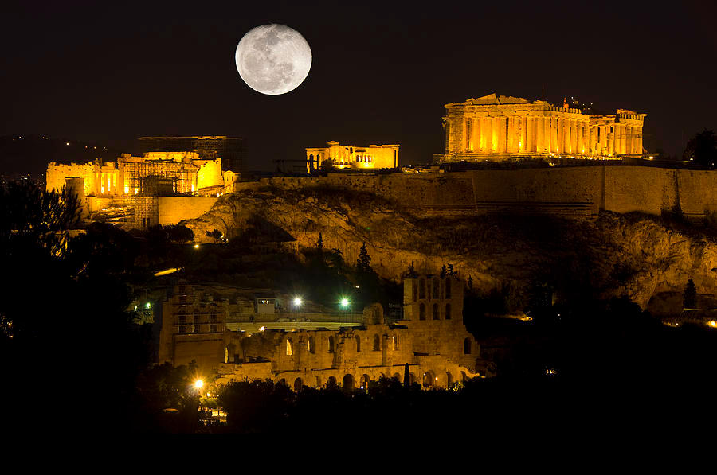
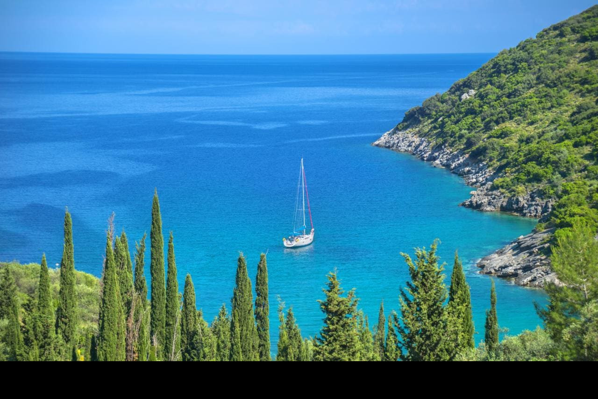
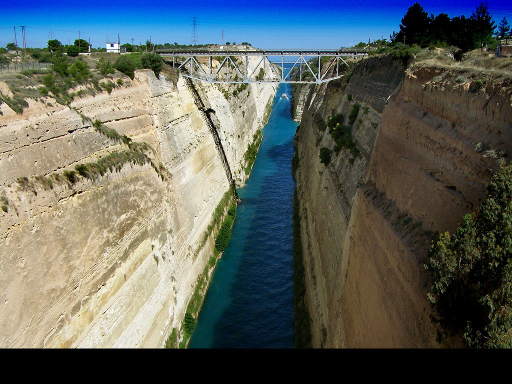

1 / 10

Erleben Sie Griechenlands Hauptstadt in voller Pracht. In den zwei Tagen in können Sie die Stadt der Athene mit ihrer Akropolis, den Parthenon, das Archäölogische Museum und viel mehr erleben. Auch können Sie Abends von Ihrem Hotel aus die Atemberaubende Sicht auf die Akropolis genießen.
2 / 10

Erleben Sie den mythischen Geburtsort des Gottes Apollo und seiner Zwillingsschwester Artemis in voller Pracht mit seinen Ruinen. Entdecken Sie einen der wichtigsten religiösen Orte des alten Griechenlands und lernen über seine Geschichte und Sagen.
3 / 10

Endecken Sie Strand und Geschichte auf einer der größten Inseln des Dodekanes und lernen Sie über die 2500 Jahre alten Geschichte Rhodos'. Auf der nach Dodes benannten Stadt können Sie mehr herrausfinden wie die Antike mit der Mittelalterlichen Stadtmauer verschwimmt, oder auch können Sie nach Schildkröten und Robben ausschau halten wären Sie sich am Stand sonnen.
4 / 10

Staunen Sie auf der größten Insel Griechenlands über die 4000 Jahre alte Geschichte der minoschen Kultur. Finden Sie die Theorien heraus warum diese Kultur untergegeangen ist und verfolgen Sie die Spuren des Königs Minos, welcher der Sohn von Europa und Zeus ist.
5 / 10

Lernen Sie mehr über die Antike Millitärsstadt Sparta und entdecken Sie wunderbare Museen in der neuen Stadt Sparte welche 1834 von König Otto gegründet wurde.
6 / 10

Erleben Sie den Beginn der Olympischen Spiele ganz nah in der nach dem Olymp benannten Stadt Olympia und rennen Sie selbst auf der antiken Rennstrecke wie es die Sportler im antiken Griechenland selbst gemacht haben. Endecken und lernen Sie wie die spitzensportler des Antiken Griechenlands sich auf ein so großes Event vorbereitet haben und trainiert haben.
7 / 10

Finden Sie mehr heraus über die Sagenumwogene Insel des Odysseus und erleben Sie ein atemberaubende Landschaft umgeben vom Meer. Entdecken Sie die hügelige Landschaft mit einer Wanderung über die Insel.
8 / 10

Erleben Sie die Stadt des Königs Agamendon und lernen Sie mehr über den Herrführer im Trojanischen Krieg. Sie können das Löwentor bestaunen, die Grabkammern und die kostbaren Schätze die in den Gräbern gefunden wurden.
9 / 10
Lernen Sie mehr über den Tempel des Aeskulaps und erleben Sie die wundervolle Architektur des Theaters welches ein UNESCO-Weltkulturerbe ist.
10 / 10

Bewundern Sie den Kanal des Korinth und das antike Korinth mit seinen Ruinen. Sie können den Tempel des Apollon bestaunen und mehr über die Geschichte im Archäölogischen Museum von Korinth lernen.